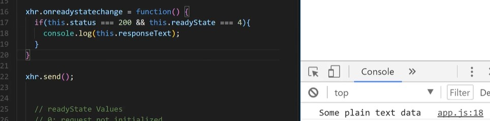

HTTP Status codes
What is Asynchronous Programming?
In a synchronous programming model, things happen one at a time. When you call a function that performs a long-running action, it returns only when the action has finished and it can return the result. This stops your program for the time the action takes.
An asynchronous model allows multiple things to happen at the same time. When you start an action, your program continues to run. When the action finishes, the program is informed and gets access to the result (for example, the data read from disk).
- Synchronous code is known as blocking code and only runs when the previous task has been completed
- JavaScript is a single synchronous threaded lanuage which means it can only excute and process one task at a time
- Example is were an app opens and it waits for data from a server, this will negatively affect your performance and user experience.
- JS uses Asynchronous to allows tasks to run while other tasks run in the background taking thier time.
- The difference between Asynchronous and synchronous
- There are a few ways to work with Async code:
- Example of synchronous code - nothing can be done whille the function is running:


- The above example but done with an Asynchronous approach:

- On the above the setTimeout(function, milliseconds) meathod uses a call back function says to run the code after a given number of time
- The below example is a synchronous code that uses a ajax request to pull 5000 photos in as JSON and once done an alert box is fired

- Information on Call stack Queue - MDN Web APIs -MDN
- The call background


- More info Visualize how JavaScript's call stack/event loop/callback queue interact
Ajax Concepts
- Ajax stands for Asynchronous JavaScript and XML.
- Ajax is:

- Ajax lets you update HTML without loading a new webpage
- Ajax is not a lanuage or framework, its a set of web technologies to send and recieve data from the client and server without reloading the webpage.
- JSON is mainly used instead of XML now with Ajax
- A diagram on how things work. The common request if normally HTTP request, making this request asynchronously. Remember we have to parse the JSON information when it comes into the client

- The XMLHttpRequest (XHR) Object is the main technology in Ajax and is provided by the JavaScript environment

- There are other libraries/Methods to make HTTP requests
- Fetch API - The new plain method
- Axios
- Superagent
- jQuery - Not suggested, mainly used for DOM manipulation
- Node HTTP
- Google Maps is a good example as it allows you to search for location and navigate all doing this quickly without loading a new HTML page
Loading new content without loading new web pages - reddit is a website that has many posts, you can vote for a post to be shown higher. This click of a button to vote sends a message to the reddit server

- Normally when you require more information or submit a form a new web page is created or required. Ajax is quicker and faster and lets you get that information from a webserver

With ajax not the whole page of information is brought back just what is required. Javascript is used to apply this information to the parts of the webpage- The internet is made up of browsers or clients making requests from servers and servers providing responses.
- You can see Ajax working within the console by clicking the cox in the console and selecting Log XMLHttpRequests

You see the above image using GET api requests from a server to pull information - You will need to know Php, Ruby, Python, Cold Fusion and a few others for the server side.
- Ajax has been around for a long time first introduced by Microsoft in 1999 with IE 5. Also known as XHR
- Javascript is used to make Ajax happen - for both request and response
Ajax uses Asynchronous technology to keep loading the html while getting the response from the server - What is one characteristic of "asynchronous" AJAX requests? - Call backs for multiple AJAX requests may not run in the order the requests were sent
Yes. Servers may take longer to respond to certain requests, so callbacks run in the order in which the responses return. - Web browsers use XMLHttpRequest Object to manage AJAX requests
- How Ajax works

- To get ajax working you will need a web server running on your machine
Ajax Example
In this example we will be pulling in some information from a text file we have created when clicking on a button
- We have the below as a setup ready for the example:
- A button on the HTML page called Get Data. This is wrapped in a div
- Another div which will be used to hold the output
- A linked js file holding out JavaScript
- Start of by creating a event listener for the button. The function used will be called loadData
- In the loadData function we start of by creating a variable called xhr and set to new XMLHttpRequest();
- This is created like any other object constructor and has properties associated to it. One of the properties we will be using will be called open
- The XMLHttpRequest method open() initializes a newly-created request, or re-initializes an existing one.
- The first paramter will be the type of request which can be - GET, POST, PUT or DELETE
- The second paramter will be the file which is this case is file.txt. This normally is a URL - A DOMString representing the URL to send the request to.
- As we want this to be asynchronous we will set the third paramter to be true - An optional Boolean parameter, defaulting to true, indicating whether or not to perform the operation asynchronously. If this value is false, the send() method does not return until the response is received. If true, notification of a completed transaction is provided using event listeners. This must be true if the multipart attribute is true, or an exception will be thrown.
- Further paramters will be username and password but this is only used when authetication is required.
- We now called the xhr variable by uisng xhr.onload = function() {}. In this function we simply decide what we want to do with the data we are getting.
- We first get the HTTP status to ensure all is ok with should return 200. the xhr variable we defined earlier we like a object constructor and has a property called status so to check this we do this.status === 200
- Another property the xhr object has is reponseText. The read-only XMLHttpRequest property responseText returns the text received from a server following a request being sent.
- To finalise everything we have to do send which would be xhr.send - The XMLHttpRequest method send() sends the request to the server. If the request is asynchronous (which is the default), this method returns as soon as the request is sent and the result is delivered using events. If the request is synchronous, this method doesn't return until the response has arrived.
- All should work and we currently are just logging the text to the console log

- the onload property is fairly new, previously we used onreadystatechange as below:
 - You can have what we call a spinner or loader, something showing while the information is being fetched. xhr.onprogress = function() {}
- To capture any errors you can use xhr.onerror = function() {}. This will only run if something has gone wrong.
- Currently we are only console logging the returned text but in the onload function we can place the text anywhere we want without a page refresh
Working With Ajax and JSON
- A json file has the extention of .json
- JSON is very similiar to a object literal. The difference with JSON is you wrap your keys in double quotes "" - "id":1,
The strings which are the values should also be wrapped in double quotes "".
- You can validate your JSON by visiting jsonlint
- The JSON will look a this in the console log

- Remember to parse the JSON as when first imported it will be imported as text. To do this we do by using JSON.parse(this.reponseText)
- The working json both js and HTML

- When dealing with JSON files that are larger than a single object we will need to loop though the array. It would be variable .forEach() and the variable will be whatever you used to parse the information.

Data From External API
- Instead of normally putting the filename we put a URL and part of the URL might need to be dynamic

- One thing to be careful of each API returns its data different so read the documentation. Some return a object if so you will need to look at the response.value for the forEach() as its the value within the object that holds the array
- The final JS code

REST API's & HTTP requests
- API stands for Application Programming Interface and is the messenger that takes requests and tells the server what you want to do, finally returning the response back to you.
- There are many different types of API's and we are talking about a web API. This is normally the below

- A rest API is the below: rest lets us format the API using HTTP and is commonly used in many different software lanuages


- You normally only ever send data with the HTTP API methods Post and PUT
Callback Functions
A callback function is a function that is passed as an argument to another function, to be “called back” at a later time. A function that accepts other functions as arguments is called a higher-order function, which contains the logic for when the callback function gets executed. It’s the combination of these two that allow us to extend our functionality.
- Previously we have used